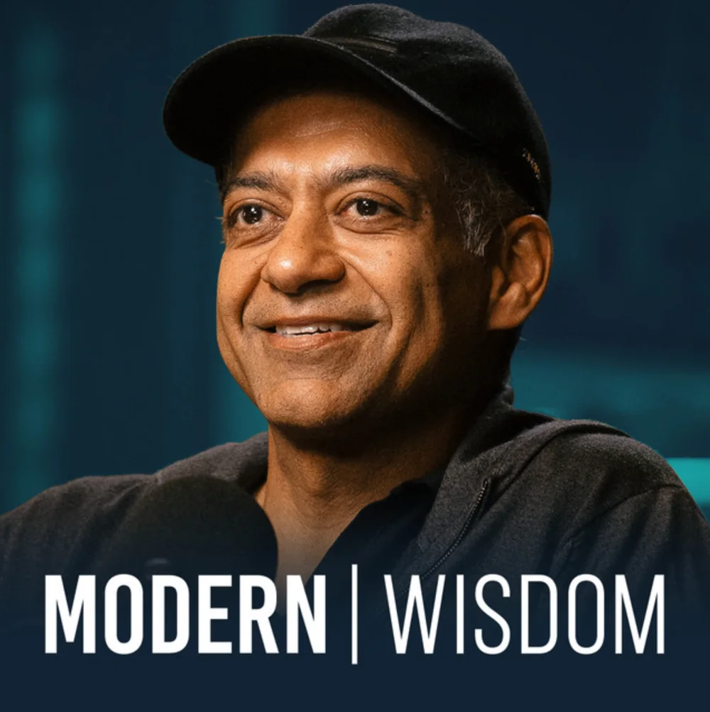

44 Harsh Truths About Human Nature — Naval Ravikant
Para mí, el mejor podcast que he escuchado hasta la fecha. Lo he escuchado más de cinco veces; lo poco que aparece Naval en este formato hace que cada conversación suya tenga un valor especial.
Abrir en Spotify →